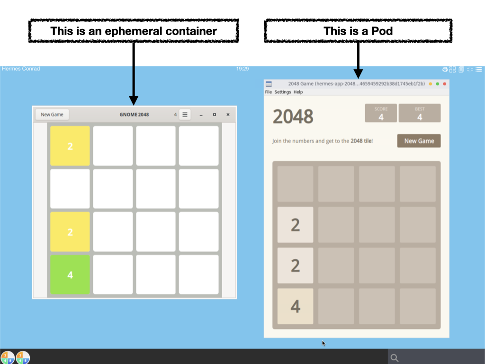
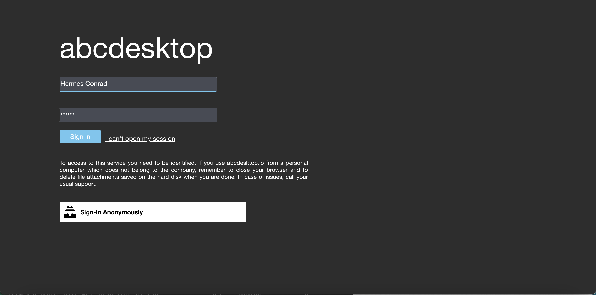
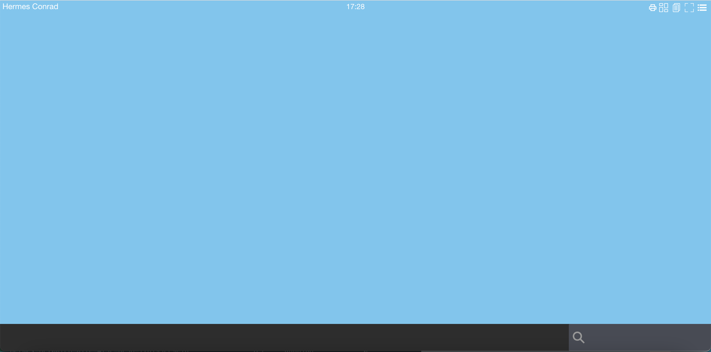
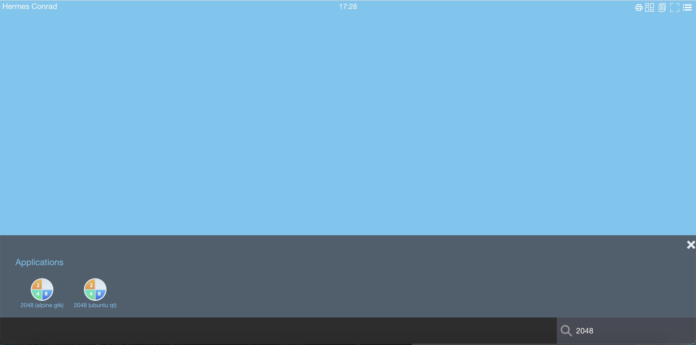
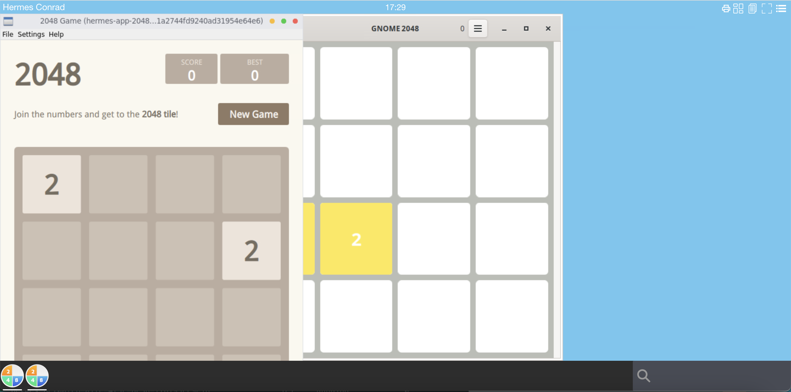
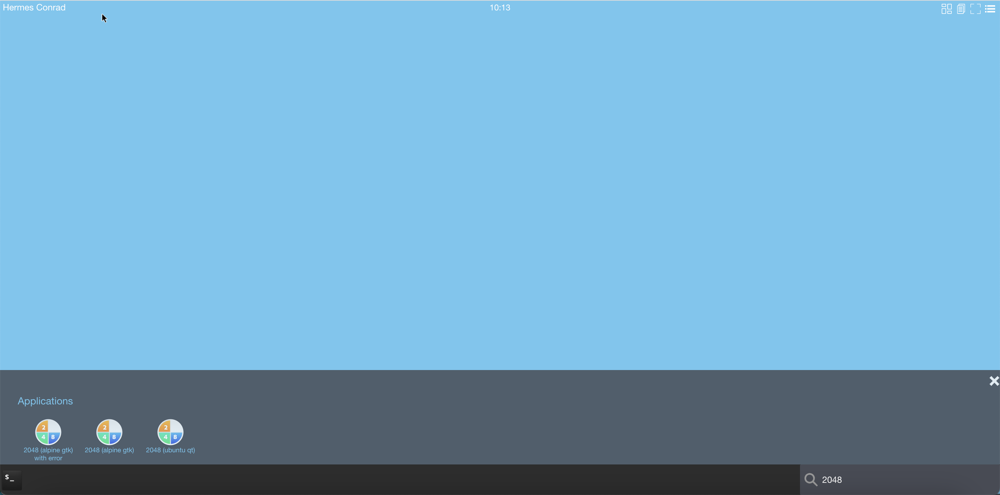
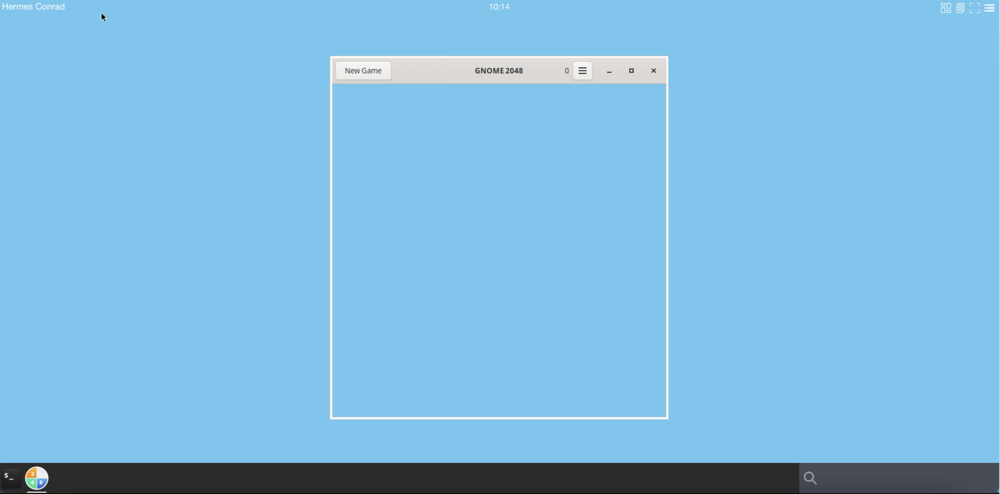
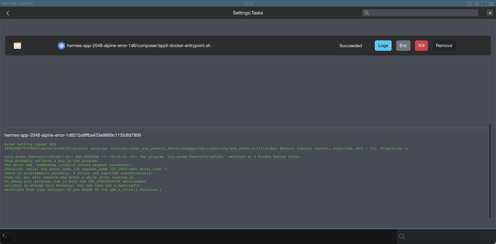
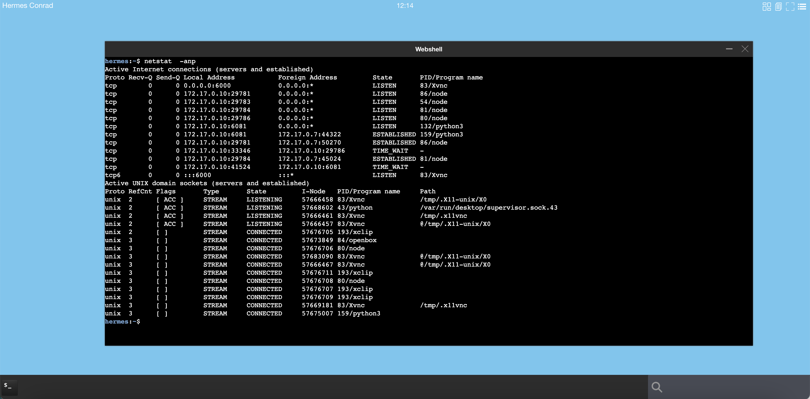
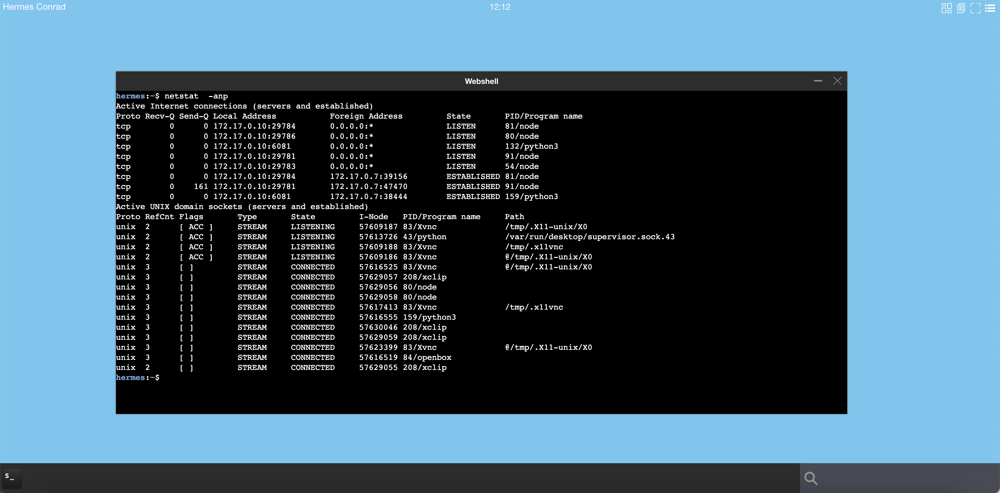

application runtime Ephemeral container and Pod
An abcdesktop application can run as a kubernetes ephemeral container or as a pod.
An ephemeral container can access to share memory shm with the X11 server. An ephemeral container run always on the same node as the user pod, where the graphical container 'X11 server' is running. An ephemeral container does not prevent cpu and memory resource limits.
A pod can't access to share memory with the X11 server. An kubernetes pod can run on separated node from the user's pod node. For a pod, you can specify resource limits.

To describe the difference between ephemeral-container and pod-application, we use the game 2048, one instance come from alpine based on gtk, the second one come from ubuntu based on qt
2048-alpineis a GTK application, and is defined to run asephemeral-container2048-ubuntuis a QT application, and is defined to run as a kubernetes pod
Requirements
jqcommand preinstalled.
Start a shell to your abcdesktop server
Get a shell to your abcdestkop server.
Download 2048-alpine and 2048-ubuntu json files
Open a shell to your abcdesktop server
curl --output 2048-alpine.d.3.0.json https://raw.githubusercontent.com/abcdesktopio/oc.apps/main/2048-alpine.d.3.0.json
curl --output 2048-ubuntu.d.3.0.json https://raw.githubusercontent.com/abcdesktopio/oc.apps/main/2048-ubuntu.d.3.0.json
Check that the json files are downloaded
$ ls -la *.json
-rw-r--r-- 1 root root 29183 Dec 28 16:24 2048-alpine.d.3.0.json
-rw-r--r-- 1 root root 29099 Dec 28 16:24 2048-ubuntu.d.3.0.json
Look at the label oc.containerengine for each json file
Read the label oc.containerengine for 2048-alpine
cat 2048-alpine.d.3.0.json | jq -r '.[0].Config.Labels."oc.containerengine"'
The response is ephemeral_container
ephemeral_container
This application 2048-alpine will start as an ephemeral_container
Read the label oc.containerengine for 2048-alpine
cat 2048-ubuntu.d.3.0.json | jq -r '.[0].Config.Labels."oc.containerengine"'
The response is pod_application
pod_application
This application 2048-ubuntu will start as a pod_application, it's a pod.
PUT 2048-alpine and 2048-ubuntu applications to your abcdesktop service
curl -X PUT -H 'Content-Type: text/javascript' http://localhost:30443/API/manager/image -d @2048-alpine.d.3.0.json
curl -X PUT -H 'Content-Type: text/javascript' http://localhost:30443/API/manager/image -d @2048-ubuntu.d.3.0.json
Each curl command returns a complete json document.
Wait for the pull pod are Ready
kubectl wait --for=condition=Ready pods --selector=type=pod_application --timeout=-1s -n abcdesktop
Wait for condition met
pod/pull-2048-alpine-install-4280c633e777dceb3f529f208b442c0dff891 condition met
pod/pull-2048-ubuntu-install-ee652f4ff381655768bcc09d54a9b62ab7684 condition met
Login to your abcdesktop service
Using a web browser, open the abcdesktop service url. If your are running abcdesktop on your local device, the url should be :
http://localhost:30443
Choose to login as hermes
Login in as the user Hermes Conrad
- Login:
Hermes Conrad - Password:
hermes

Your desktop is created
Your desktop is created. By default your dock is empty.

Look for 2048
In the search text area, write the keyword 2048

The two applications appear in the search result applications area.
Start each 2048 application
Start 2048-ubuntu and 2048-alpine application

2048-ubuntu and 2048-alpine applications start. The application 2048-alpine can start quickly than the application 2048-ubuntu.
2048-alpineis an ephemeral container attached to the graphical container.2048-ubuntuis a complete kubernetes pod.
Let's have a look on your server side
Get pod application
Get the running pod using kubectl get pods -n abcdesktop
$ kubectl get pods -n abcdesktop
NAME READY STATUS RESTARTS AGE
daemonset-nginx-4wdkd 1/1 Running 0 11m
daemonset-pyos-5cxtw 1/1 Running 0 11m
hermes-7af63f49-0d25-4de8-9d28-5fa79cc83faa 4/4 Running 0 92s
hermes-app-2048-ubuntu-a5a8695d1a2744fd9240ad31954e64e6 1/1 Running 0 27s
memcached-od-bdcbbcb74-kwwb5 1/1 Running 0 11m
mongodb-od-6484d8bc67-24w6v 1/1 Running 0 11m
openldap-od-795c55f6db-mnqvb 1/1 Running 0 11m
speedtest-od-5565dfdc67-6p67m 1/1 Running 0 11m
The application 2048-ubuntu is listed as a pod. The application 2048-ubuntu is a pod. The prefix is the $userid-app for example hermes-app-2048-ubuntu-a5a8695d1a2744fd9240ad31954e64e6, followed by the application name 2048-ubuntu and a uuid.
The application 2048-alpine is not a pod.
The application 2048-alpine is listed as an ephemeral container, inside the user pod hermes-7af63f49-0d25-4de8-9d28-5fa79cc83faa
kubectl get pods hermes-7af63f49-0d25-4de8-9d28-5fa79cc83faa -o json -n abcdesktop | jq -r ".status.ephemeralContainerStatuses"
The application 2048-alpine.d is listed in the .status.ephemeralContainerStatuses
[
{
"containerID": "containerd://3ae068cd70b251bb5da5d22d29247d0ffc3916fae742748bdf87f15d92d58e18",
"image": "docker.io/abcdesktopio/2048-alpine.d:3.0",
"imageID": "docker.io/abcdesktopio/2048-alpine.d@sha256:5ba5291dbf719ad70d70c763d899aeb012048a1e7f80e03b500ad050b436273c",
"lastState": {},
"name": "hermes-conrad-2048-alpine-7b6f7fae3fe84a81b28c578d6d48147e",
"ready": false,
"restartCount": 0,
"state": {
"running": {
"startedAt": "2022-12-28T16:29:19Z"
}
}
}
]
Ephemeral container versus Pod application
An ephemeral container can access to share memory shm with the X11 server. An ephemeral container run always on the same node as the X11 server.
A pod can't access to share memory with the X11 server. An Kubernetes pod can run on a separated node from the X11 server.
If your application need to share memory with X11 server, when you have to set the oc.containerengine label to ephemeral_container.
Compare kubernetes ephemeral container and pod
Kubernetes ephemeral container
Use an ephemeral container to start an application have some advantages and some disadvantages.
advantages
- Start quickly
- Less system resources than a pod
- Share Process Namespace is allowed
shareProcessNamespace: true - Share memory shm is allowed
- Share the network stack (IP Address) of the user pod
disadvantages
- resources is disallowed
- no
limitsandrequests(cpu, memory) nodeSelectornot supported
Kubernetes Pod
Use a kubernetes pod to start an application have some advantages and some disadvantages.
advantages
- resources (cpu, memory) is allowed
limitsandrequestsare supported- ports, livenessProbe, readinessProbe are allowed
nodeSelectorsupport an application can run on a dedicated node (for example with GPU)- can use a dedicated network to route application data
disadvantages
- More system resources than an ephemeral container
- Need X11 tcp port enabled on the user pod
'X11LISTEN': 'tcp' - Increase network resource if application pod and user pod run a distinct host
Troubleshooting
Troubleshooting BadShmSeg error
If you configure 2048-alpine with gtk to start as a pod and not as an ephemeral container, you will get the BadShmSeg error
Install the application 2048-alpine-with-error
curl --output 2048-alpine.d.3.0.json https://raw.githubusercontent.com/abcdesktopio/oc.apps/main/2048-alpine-with-error.d.3.0.json
2048-alpine-with-error.d.3.0.json
PUT 2048-alpine-with-error applications to your abcdesktop service
curl -X PUT -H 'Content-Type: text/javascript' http://localhost:30443/API/manager/image -d @2048-alpine-with-error.d.3.0.json
Wait for the pulled pod are Ready
kubectl wait --for=condition=Ready pods --selector=type=pod_application_pull --timeout=-1s -n abcdesktop
Wait for condition met
pod/pull-2048-alpine-with-error-install-935509a58088531ae57756 condition met
Login to your abcdesktop service
Using a web browser, open the abcdesktop service url. If your are running abcdesktop on your local device, the url should be :
http://localhost:30443
Choose to login as hermes
Login in as the user Hermes Conrad
- Login:
Hermes Conrad - Password:
hermes
Your desktop is created
Your desktop is created. By default your dock is empty.
Look for 2048
In the search text area, write the keyword 2048

The three applications appear in the search result applications area.
Start the 2048 (alpine gtk with error) application. It uses shared segment with X Window System, it must run as an ephemeral container, but as a pod it fails. The application starts but exit after few seconds, the content of the application does not appear.

In the abcdesktop menu, choose Settings | Tasks.

Then select the Logs button. The error was 'BadShmSeg (invalid shared segment parameter)'.
(org.gnome.TwentyFortyEight:36): Gdk-WARNING **: 10:14:26.185: The program 'org.gnome.TwentyFortyEight' received an X Window System error.
This probably reflects a bug in the program.
The error was 'BadShmSeg (invalid shared segment parameter)'.
(Details: serial 820 error_code 128 request_code 131 (MIT-SHM) minor_code 3)
(Note to programmers: normally, X errors are reported asynchronously;
that is, you will receive the error a while after causing it.
To debug your program, run it with the GDK_SYNCHRONIZE environment
variable to change this behavior. You can then get a meaningful
backtrace from your debugger if you break on the gdk_x_error() function.)
If you are running QT application, you can disable the X11 MIT Shared Memory Extension support. The MIT-SHM is an extension to the X server which allows faster transactions by using shared memory. Container isolation blocks it. Qt applications can be forced not to use the extension, by setting the variable QT_X11_NO_MITSHM value to 1.
QT_X11_NO_MITSHM=1
Note your can also use
QT_XCB_NO_MITSHMvalue to1
Troubleshooting chromium application
For chromium application disabled shm-usage with the parameters
--disable-dev-shm-usage
-
disable-dev-shm-usageget more informations about the dev shm usage and all chromium parameters -
no-sandbox: get more informations about the no-sandbox parameters.
Troubleshooting cannot open display or could not connect to display error
When you start an application the log file write cannot open display error
kubectl logs hermes-app-2048-ubuntu-c7360cd025d04813ad5e0af74b6df4ba -n abcdesktop
qt.qpa.xcb: could not connect to display 172.17.0.10:0
qt.qpa.plugin: Could not load the Qt platform plugin "xcb" in "" even though it was found.
This application failed to start because no Qt platform plugin could be initialized. Reinstalling the application may fix this problem.
Available platform plugins are: eglfs, linuxfb, minimal, minimalegl, offscreen, vnc, xcb.
Using the web shell inside an abcdesktop session, start netstat -a command line
The result should show that the process Xvnc is listening on tcp port number 6000

hermes:~$ netstat -anp
Active Internet connections (servers and established)
Proto Recv-Q Send-Q Local Address Foreign Address State PID/Program name
tcp 0 0 0.0.0.0:6000 0.0.0.0:* LISTEN 82/Xvnc
If Xvnc is not listening on tcp port number 6000

Update od.config to make Xvnc listen on tcp port number 6000
Open your od.config file, and look at the desktop.envlocal option.
Add 'X11LISTEN': 'tcp' to the dictionary :
desktop.envlocal : { 'DISPLAY' : ':0.0',
'SET_DEFAULT_WALLPAPER' : 'welcometoabcdesktop.png',
'X11LISTEN' : 'tcp' }
Save your local od.config file.
To apply changes, you can replace the abcdesktop-config
kubectl delete configmap abcdesktop-config -n abcdesktop
kubectl create --from-file=od.config -n abcdesktop
Then restart pyos daemonset
kubectl rollout restart daemonset.apps/daemonset-pyos -n abcdesktop
You should read on stdout
daemonset.apps/daemonset-pyos restarted